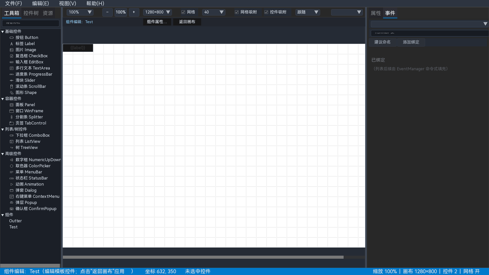

14 组件系统
组件把一组可复用控件封装成模板。模板只定义一次，实例可以有自己的属性值和事件绑定，适合做卡片、工具栏项、登录表单等重复结构。

图 14-1 组件编辑模式：画布上方出现组件编辑条
14.1 创建组件
- 在画布或控件树中选中一个控件（通常是一个 Panel 或一组控件的根）。
- 选择 。
- 输入组件名称；名称是工具箱中的组件类型名。
- 确认后，设计器创建组件定义，并在工具箱“组件”分组中显示。
- 从工具箱拖入组件名，放置组件实例。
组件模板的根必须是控件；如果选中的是可容纳子控件的控件，模板会包含它的子树。非容器控件也可以创建组件；模板根会自动包一层透明 Panel，保证组件模板根始终是可容纳子控件的容器。
14.2 组件编辑模式
进入方式：
- 选中组件实例，选择 。
- 在控件树右键组件实例，选择“编辑组件…”。
- 在工具箱的组件分组右键组件名，选择编辑。
进入后画布上方出现“组件编辑: 名称”，右侧有“组件属性…”和“返回画布”按钮。此时编辑的是模板，不是某个实例。
组件编辑模式中不要保存/打开其他工程；先点击“返回画布”，让设计器应用模板修改。
14.3 组件属性声明
- 在组件编辑条点击“组件属性…”。
- 用 JSON 声明 props，例如：
{
"label": { "type": "string", "default": "按钮" },
"size": { "type": "number", "default": 18 },
"primary": { "type": "bool", "default": true },
"bgColor": { "type": "string", "default": "#4A90D9FF" }
}type支持 string / number / bool。default是实例未赋值时的默认值。- 声明后，模板控件可用
{{propName}}引用属性。
模板中的文本、数字、布尔和颜色槽可以使用 {{...}} 占位符；实例 props 会在展开时替换。
14.4 实例属性
- 返回画布，选中组件实例。
- 右侧属性面板的“行为”区域显示组件 props 表单。
- 修改字符串/数字/布尔值，画布立即更新。
- 颜色 prop 可直接取色或输入十六进制。
实例属性只保存在实例节点上，不修改组件模板。多个实例可以有不同的 props。
14.5 组件实例事件
组件模板中控件的事件使用 _comp_ 前缀命名。实例事件面板会列出这些键，允许把实例事件绑定到宿主 handler。
- 模板侧：定义“这个组件可以向外发出哪些事件”。
- 实例侧：决定当前实例的事件由哪个函数处理。
- 导出时生成实例的宿主 handler，不生成
_comp_占位。
事件的完整用法见 事件面板。
14.6 嵌套与删除
- 组件模板中可以放置其他组件实例，形成嵌套。
- 删除组件定义前，设计器会检查是否被其他组件模板引用；被引用时拒绝删除并提示嵌入者。
- 删除组件会删除定义及其全部实例；操作可撤销。
- 删除实例不会删除组件定义。
14.7 组件与预览、导出
- 预览会展开组件模板，显示实例 props 替换后的最终内容。
- 导出的 JSON/工程保留
components区与实例节点，由 UICornerstone 展开。 - 组件模板中的资源路径、主题类和事件会随导出保留。
14.8 常见问题
| 现象 | 原因 | 处理 |
|---|---|---|
| 实例属性修改无效 | 模板没有引用该 prop | 在模板控件属性中使用 {{prop}} |
| 组件编辑后画布没变化 | 没有返回画布/应用模板 | 点击“返回画布” |
| 无法删除组件 | 被其他组件模板嵌入 | 先移除嵌入引用 |
| 实例事件列表为空 | 模板没有 _comp_ 事件 | 在模板控件上绑定 _comp_ 事件 |